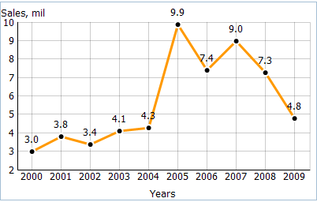
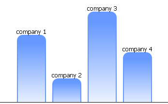
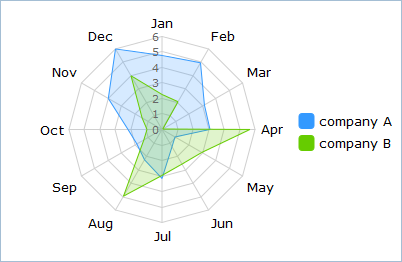
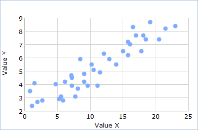
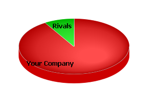

Chart Components Overview
In many cases, developers need to include different types of charts to represent data. dhtmlxChart gives you such opportunity. Depending on the purpose of an application and data, developer can select the most suitable type:
If, for instance, you need to show how currency has changed over the last month or how the world population has increased over the last 5 years , use a Line Chart. It's the best variant when a data has more than 10 points and you want to show dynamic over several months or years.

On other side, if you need to accentuate data at seperate times and you have less then 10 data points, the best choice for you - Bar Chart.

When there is the necessity to show how a separate data value adds up to the total or which part of the whole this value represents, you should use Area Chart as it was developed exactly for these purposes.

Radar charts are useful when you want to monitor how several different factors relates to one item (a center point) and compare their aggregate values.

Scatter charts are generally used to display and compare numeric values that have two variables (such as most scientific, statistical, and engineering data) for detecting different groupings or patterns.

Finally, when the words 'proportion', 'percentage', 'share' in the best way describe what you need - stop at Pie Chart. For example, you want to highlight your company of the business rivals. More suitable chart type to show it you can't even imagine.
